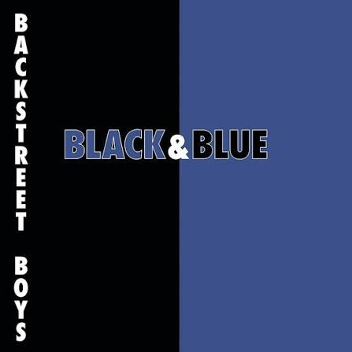

Backstreet Boys


Dari : Mas2 Jatim
<!DOCTYPE html>
<html lang="en" xmlns="http://www.w3.org/1999/xhtml">
<head>
<meta charset="UTF-8">
<meta name="viewport" content="width=device-width, initial-scale=1.0">
<link rel="stylesheet" href="Styles.css" />
<title>SELAMAT ULANG TAHUN</title>
<link rel="icon" href="data:,🌎">
</head>
<body>
<div class="top_a1">
<div class="atas_a1">
<img class="imgawal" src="https://media.tenor.com/yGlNhzA58RUAAAAi/nub-nub-cat.gif" alt="CHAR">
<h1 class="h1_a">SELAMAT ULANG TAHUN "ZAHRA"</h1>
</div>
<div class="a1">
<button class="Lanjutkan1">Lanjutkan</button>
</div>
</div>
<div class="top_a2">
<div class="a2">
<h1>𝓜𝓪𝓪𝓯𝓴𝓪𝓷 𝓢𝓪𝔂𝓪, 𝓗𝓪𝓷𝔂𝓪 𝓜𝓮𝓶𝓫𝓮𝓻𝓲𝓴𝓪𝓷 𝓗𝓪𝓭𝓲𝓪𝓱 𝓑𝓮𝓻𝓾𝓹𝓪 𝓘𝓷𝓲 𝓢𝓪𝓳𝓪.....</h1>
</div>
<div class="a2_button">
<button class="gpp">GPP</button>
<button class="Ga">Malaz</button>
<button class="Lanjutkan2">Lanjutkan</button>
</div>
</div>
<div class="div_lagu">
<h1>Nama Lagu</h1>
<h5>Seingetku Ini Lagu Kesukaan Anda</h5>
<p>Seingetku Ini Lagu Kesukaan Anda</p>
<div class="piring">
<img class="img_lagu" src="img.png" />
</div>
<audio controls class="audios">
<source src="WES.mp3" type="audio/mpeg">
</audio>
<button class="berikut">Selanjutnya</button>
</div>
<div class="a3" id="a3">
<h1>Semoga Kamu Bahagia Selalu</h1>
<h2>Dan Semoga Kamu Sukses Selalu</h2>
<h3>Semoga Selalu Sehat dan Bahagia.....</h3>
<button class="byee">Lanjut</button>
</div>
<div class="div_bye">
<button class="kepembuatan">Penjelasan Pembuatan</button>
<img class="imgakhir" src="https://media.tenor.com/d-HSksPE2dMAAAAi/cat-dance-happy-dance-cat.gif" />
<h1 class="h_end">Terima Kasih Kawan</h1>
<h2 class="h_end">Tetep Semangat!!!</h2>
<h2 class="h_end">MAAFKAN SAYA CUMA BEGINI</h2>
<p>Dari : Mas2 Jatim</p>
</div>
</body>
</html>Nah disini itu gw kemaren buat htmlnya dulu dan ya strukturnya kek gini semoga bisa dipahami
nah terus kan itu ada head "apa itu head?" nah head adalah ya kek kepala dari web contoh buat tempat tittle, style buat webnya dll contoh kek digambar kan ada "meta name="viewport" content="width=device-width, initial-scale=1.0">" itu buat responsive layar
nah terus kan itu ada body nah body itu isinya dari webnya contoh kek digambar kan ada "div class="top_a1" nah itu isinya dari webnya kek gitu, nah untuk top_a1 itu ya paham kan buat apa ya buat awalan lah yang selamat ulang tahun itu, untuk bagian dalam top_a1 kan ada tuh a1 nah itu isinya yaa.... biar enak gitu kalo mau di clear ama show in makanya gw tambahin top_a1 sebagai parent si a1. Nah untuk h1 itu = HEADER paham kan... kan pernah make word nah kek gitu jadi (h1 = yang paling gede, h2 = agak gede, h3 = sedang, sampe h6, nah untuk img kan gw pake link tuh knp pake src? karena ya src ya buat ambil gambar sih contoh ambil a1.png dll gitu)
Nah sebelum lanjut, ada yang namanya class dan id. Class itu bisa dibilang nama atau tanda yang diksih lah ke sebuah element supaya nanti gampang dipanggil dari CSS atau JavaScript. Contohnya class="gpp", berarti element itu mempunyai class bernama gpp. Satu class juga bisa dipakai oleh beberapa element. Kalau id kurang lebih mirip, tapi biasanya id digunakan sebagai identitas khusus untuk satu element. Contohnya id="a3". Jadi kalau mau gampangnya, class itu kayak nama kelompok sedangkan id itu kayak nomor identitas satu orang.
Terus kalau di CSS ada tanda titik seperti .gpp itu artinya kita sedang mencari element yang mempunyai class gpp. Kalau pakai tanda pager kek #a3 berarti cari element yang mempunyai id a3. Jadi jan sampe ketuker jir, nanti bisa error ntah animasi g jalan style g kepasang wkwkwk.
lagu nih di lagu alias div lagu kan ada audio dan didalamnya ada source src="WES.mp3" type="audio/mpeg", nah disitu buat isi source link ato file mp3 dll, yang kamu klik itu buat jalanin lagi ya itu, buat piringan nanti gw bahas di css, ya kurang lebih begitu gw lanjut ke css/stylesheet
Ya.... Kurang lebih html masih oke dan masih mudah dan juga belum masuk ke sriptnya
body {
display: flex;
background-color:antiquewhite;
justify-content: center;
align-content: center;
align-items: center;
min-height: 100vh
}
.imgawal {
animation: melebar 2s ease;
}
@keyframes rusak {
0% {
transform:translateX(0px);
transform:translateY(0px);
}
20% {
transform: translateX(50px);
transform: translateY(20px);
}
40% {
transform: translateX(100px);
transform: translateY(40px);
}
60% {
transform: translateX(500px);
transform: translateY(60px);
}
80% {
transform: translateX(550px);
transform: translateY(80px);
}
100% {
transform: translateX(600px);
transform: translateY(1000px);
}
}
@keyframes atasbawah {
0% {
transform: translateY(-500px)
}
50% {
transform: translateY(-200px)
}
80% {
transform: translateY(-50px)
}
0% {
transform: translateY(0px)
}
}
@keyframes kecilbesar {
0%, 100% {
scale: 1;
}
50% {
scale: 1.2;
}
}
@keyframes rotasi {
0% {
transform:rotate(0deg);
}
100% {
transform: rotate(360deg)
}
}
@keyframes mengecil {
0% {
scale: 10;
}
100% {
scale: 1;
}
}
@keyframes melebar {
0% {
scale: 100;
}
100% {
scale: 1;
}
}
@keyframes bouch {
0% {
width: 1000px;
}
20% {
width: 500px;
}
50% {
width: 150px;
}
100% {
width: auto;
}
}
@keyframes naikturun {
0%, 100% {
background: linear-gradient(black, #c3c3c3);
-webkit-background-clip: text;
-webkit-text-fill-color: transparent;
color: Background;
text-shadow: 0px 10px 20px black;
}
100% {
background: linear-gradient(chocolate, #f65454);
-webkit-background-clip: text;
-webkit-text-fill-color: transparent;
color: Background;
text-shadow: 0px 10px 20px yellow;
}
}
@keyframes samping {
0% {
width: 0px;
}
50% {
width: 100px
}
100% {
width: 500px;
}
}
@keyframes sampings {
0% {
width: auto;
}
50% {
width: 100px
}
100% {
width: 500px;
}
}
@keyframes kecil {
0% {
scale: 1
}
50% {
scale: 0.5;
}
80% {
scale: 0.1;
}
100% {
scale: 0.1;
display: none;
}
}
@keyframes kuwecil {
from {
scale: 0.1;
}
to {
scale: 1;
}
}
@keyframes rotasikanamkiri {
0%, 100% {
rotate: 50deg;
}
50% {
rotate: -50deg;
}
}
@keyframes transisisamping {
0% {
transform: translateX(0px);
}
50% {
transform: translateX(500px);
}
100% {
transform: translateX(5000px);
display: none;
}
}
@keyframes transisingilang {
0% {opacity: 1}
50% {opacity: 0.5}
100% {opacity: 0}
}
.top_a1 {
display: ;
}
.atas_a1 {
font-size: 20px;
display: flex;
justify-content: center;
align-items: center;
padding: 20px;
}
.a1 {
padding: 20px;
font-size: 20px;
display: flex;
flex-direction: column;
justify-content: center;
align-items: center;
}
.h1_a {
text-shadow: 0px 10px 20px black;
animation: naikturun 5s ease infinite, atasbawah 4s ease;
}
.a1 button {
background-color: #4CAF50;
border: double 5px;
color: white;
padding: 15px 32px;
text-align: center;
text-decoration: none;
justify-content: center;
display: flex;
font-size: 16px;
margin: 4px 2px;
cursor: pointer;
transition: all 0.1s ease;
border-radius: 20px;
width: 200px;
animation: bouch 8s ease;
text-shadow: 0px 5px 5px black;
}
.a1 button:hover {
background-color: #3b9621;
border: double 5px #c3c3c3;
transform: scale(1.2);
}
.a1 button:active {
background-color: #4cff00ff;
border: double 5px #808080;
transform: scale(1);
}
.top_a2 {
display: none;
animation: transisingilang 1s alternate-reverse;
flex-direction: column;
}
.a2 {
padding: 10px;
margin: 5px;
font-size: 20px;
display: flex;
flex-direction: column;
justify-content: center;
align-items: center;
}
@keyframes naik_turun {
from {
transform: translateY(-20%)
}
to {
transform: translateY(0)
}
}
@keyframes hover {
0%, 100% {
transform: translateY(0px);
text-shadow: 0px 5px 2px black;
}
50% {
transform: translateY(-50px);
text-shadow: 0px 150px 10px black;
}
}
.a2 h1 {
width: 500px;
animation: kuwecil 2s ease, hover 5s infinite ease;
}
.a2_button {
padding: 10px;
display:flex;
justify-content:center;
animation: kecil 2s alternate-reverse;
}
.Ga {
background-color: coral;
border: dotted 5px;
color: white;
padding: 15px 32px;
text-align: center;
text-decoration: none;
justify-content: center;
display: flex;
font-size: 16px;
margin: 4px 20px;
cursor: pointer;
transition: all 0.5s ease;
border-radius: 20px;
width: 50px;
animation: transisingilang 3s alternate-reverse;
}
.Ga:hover {
background-color: chocolate;
scale: 1.1
}
.Ga:active {
background-color: brown;
scale: 1;
}
.gpp {
background-color: forestgreen;
border: dotted 5px white;
border-radius: 20px;
margin: 4px 20px;
padding: 15px 0px;
width: 80px;
color: white;
transition: all 0.5s ease;
cursor: pointer;
text-decoration: none;
animation: transisingilang 2s alternate-reverse;
}
.gpp:hover {
background-color: chartreuse;
border: dotted 5px black;
color: black;
scale: 1.1;
}
.gpp:active {
scale: 1;
background-color: darkgreen;
}
.Lanjutkan2 {
margin: 4px 20px;
padding: 15px 0px;
border: dashed;
border-radius: 20px;
background-color: white;
text-align: center;
width: 100px;
transition: all 0.5s ease;
cursor: pointer;
animation: transisingilang 4s alternate-reverse;
}
.Lanjutkan2:hover {
background-color: black;
border: dashed white;
color: white;
scale: 1.1;
}
.Lanjutkan2:active {
scale: 1;
}
.a3 {
display: none;
flex-direction: column;
padding: 10px;
justify-content: center;
align-content: center;
align-items: center;
}
.a3 h1 {
background: linear-gradient(violet, coral);
-webkit-background-clip: text;
-webkit-text-fill-color: transparent;
color: Background;
animation: rusak 3s alternate-reverse;
}
.a3 h2 {
background: linear-gradient(#6d0a0a, #16bfba);
-webkit-background-clip: text;
-webkit-text-fill-color: transparent;
color: Background;
animation: rusak 4s alternate-reverse;
}
.a3 h3 {
background: linear-gradient(#3fe931, #4cff00ff);
-webkit-background-clip: text;
-webkit-text-fill-color: transparent;
color: Background;
animation: rusak 5s alternate-reverse;
}
@keyframes kolor {
0% {
background-position: 150% 0%;
}
100% {
background-position: -50% 0%;
}
}
.byee {
background-color: black;
color: white;
border: groove;
border-radius: 100px;
padding: 20px 50px;
transition: all 0.5s ease;
animation:rusak 6s alternate-reverse;
}
.byee:hover {
background-color: darkgrey;
color: black;
scale: 1.1;
}
.byee:active {
scale: 1;
background-color: azure;
border-color: aliceblue;
}
.div_bye {
display: none;
flex-direction: column;
align-content: center;
align-items: center;
justify-content: center;
animation: kecil 5s alternate-reverse;
}
.imgakhir {
animation: kecilbesar 0.5s ease infinite;
}
.h_end {
animation: kecilbesar 0.5s ease infinite;
}
.div_lagu {
display: none;
flex-direction: column;
justify-content: center;
align-content: center;
align-items: center;
padding 10px;
margin: 4px;
width: 350px;
height: 600px;
background-color: violet;
border: solid;
border-radius: 50px;
animation: naekatas 2s ease;
}
.img_lagu {
background-position: center;
width: 100px;
height: 100px;
padding 10px;
margin: 20px;
border: solid 50px;
border-radius: 100000px;
}
@keyframes berputar {
from {
rotate: 0deg;
}
to {
rotate: 360deg;
}
}
audio {
border: solid 5px;
border-radius: 30px;
background-color: violet;
box-shadow: black 10px;
}
.berikut {
border: 2px solid black;
border-radius: 20px;
padding: 20px;
margin: 10px;
transition: all 0.1s ease;
}
.berikut:hover {
background-color: black;
color: white;
}
.berikut:active {
scale: 1.1;
}
@keyframes naek {
from {
transform: translateY(0px)
}
to {
transform: translateY(1000px)
}
}
@keyframes naekatas {
from {
transform: translateY(-1000px)
}
to {
transform: translateY(0px)
}
}
.naikk {
animation: naek 3s ease;
}
.ilank {
animation: transisingilang 2s ease;
}Nah sekarang lanjut ke CSS atau Cascading Style Sheets. Kalau HTML tadi tugasnya membuat struktur dan isi website, CSS tugasnya membuat website tersebut menjadi lebih bagus dan enak dilihat. CSS bisa digunakan untuk mengatur warna, ukuran tulisan, posisi element, background, border, jarak, sampai membuat animasi. Jadi HTML itu bisa dibilang kerangka rumahnya, sedangkan CSS itu bagian yang bikin rumahnya punya warna, bentuk, dan hiasan. Kalau HTML doang biasanya kelihatan polos banget jirr wkwkwk.
Cara menulis CSS biasanya seperti ini: nama element atau class ditulis dulu, lalu di dalam kurung kurawal kita masukkan property yang mau diubah. Contohnya .gpp { background-color: forestgreen; }. Tanda titik di depan gpp berarti kita sedang memilih element yang mempunyai class gpp. Sedangkan background-color adalah property-nya dan forestgreen adalah nilai yang diberikan. Jadi gampangnya CSS bilang "element gpp, background kamu bikin hijau".
Nah kalau ada tanda titik seperti .gpp itu digunakan untuk memilih class. Kalau ada tanda # seperti #a3 itu digunakan untuk memilih id. Contohnya .a3 berarti memilih element yang class-nya a3, sedangkan #a3 berarti memilih element yang id-nya a3. Jadi jangan sampai ketuker titik sama pagar, nanti yang dicari CSS bukan element yang kita maksud wkwkwk.
Selanjutnya ada body. Body adalah bagian utama dari halaman website yang berisi semua element yang ditampilkan di halaman. Di CSS gw kasih body { display: flex; ... } supaya isi halaman menggunakan Flexbox. Flexbox ini sangat berguna buat mengatur posisi element supaya lebih gampang ditaruh di tengah, ke samping, ke bawah, dan lain-lain.
Di body gw juga menggunakan justify-content: center dan align-items: center. Gampangnya dua property ini digunakan untuk membantu menaruh isi element ke tengah. Jadi kalau kita ingin tulisan atau bagian website berada di tengah layar, Flexbox bisa membantu mengaturnya tanpa harus menghitung posisi secara manual. Manusia akhirnya menemukan cara supaya nggak perlu menghitung posisi pixel satu-satu wkwkwk.
Ada juga flex-direction: column. Kalau Flexbox biasanya element bisa disusun secara horizontal, dengan flex-direction: column element-element tersebut akan disusun dari atas ke bawah. Contohnya di beberapa div pada website ini gw pakai supaya tulisan, gambar, audio, dan button tersusun secara vertikal.
Selanjutnya ada display. Ini salah satu property yang sering gw pakai di project ini. display: none; digunakan untuk menyembunyikan element. Contohnya .top_a2, .a3, .div_lagu, dan .div_bye awalnya gw kasih display: none supaya bagian tersebut belum muncul ketika website pertama kali dibuka. Nanti JavaScript yang akan mengubahnya menjadi display: flex ketika waktunya ditampilkan.
Kalau display: flex; berarti element ditampilkan menggunakan Flexbox. Jadi misalnya ada div yang awalnya display: none, kemudian JavaScript mengubahnya menjadi display: flex, div tersebut akan muncul dan isi di dalamnya bisa diatur menggunakan Flexbox. Makanya display ini lumayan penting di website gw karena gw bikin beberapa bagian muncul dan menghilang secara bergantian.
Nah ada juga padding dan margin. Keduanya sama-sama berhubungan dengan jarak, tapi tempatnya beda. Padding adalah jarak antara isi element dengan bagian dalam atau pinggir element tersebut. Sedangkan margin adalah jarak antara sebuah element dengan element lain di luar dirinya. Gampangnya padding itu jarak ke dalam, margin itu jarak ke luar.
Contohnya kalau button terlalu mepet dengan tulisan di dalamnya, kita bisa menggunakan padding. Kalau button terlalu mepet dengan button lain, kita bisa menggunakan margin. Jadi misalnya padding: 15px 32px; itu memberikan jarak di dalam button, sedangkan margin: 4px 20px; memberikan jarak di luar button.
Ada juga width dan height. width digunakan untuk mengatur lebar element, sedangkan height digunakan untuk mengatur tinggi element. Contohnya .div_lagu gw kasih width: 350px dan height: 600px. Artinya kotak bagian lagu tersebut mempunyai lebar 350 pixel dan tinggi 600 pixel.
Untuk ukuran ada px atau pixel. Pixel adalah satuan ukuran yang sering digunakan dalam CSS. Contohnya width: 100px berarti lebarnya 100 pixel. Selain px ada juga satuan lain seperti %, em, rem, vh, dan vw. Tapi untuk project ini gw lebih sering menggunakan px karena lebih gampang buat ngatur ukuran secara langsung.
Selanjutnya ada background-color. Sesuai namanya, ini digunakan untuk mengatur warna background sebuah element. Contohnya body gw kasih background-color: antiquewhite; supaya warna latar belakang halaman menjadi antiquewhite. Bisa juga menggunakan nama warna seperti black, white, violet, coral, dan lain-lain atau menggunakan kode warna seperti #c3c3c3.
Ada juga color. Kalau background-color mengubah warna background, color digunakan untuk mengubah warna tulisan. Contohnya color: white; berarti tulisan di dalam element tersebut akan berwarna putih.
Nah sekarang masuk ke border. Border digunakan untuk memberikan garis atau batas di sekitar sebuah element. Contohnya border: solid; berarti memberikan border dengan bentuk garis solid. Ada juga dotted untuk garis titik-titik, dashed untuk garis putus-putus, double untuk garis ganda, dan groove untuk efek garis tertentu. Border ini gw pakai di button, audio, dan piringan.
Untuk membuat border menjadi bulat ada border-radius. Contohnya border-radius: 20px; akan membuat sudut element menjadi lebih bulat. Kalau nilainya sangat besar atau menggunakan 50%, bentuknya bisa menjadi bulat. Makanya piringan lagu gw kasih border-radius yang sangat besar supaya bentuknya menjadi lingkaran.
Selanjutnya ada text-shadow. Ini digunakan untuk memberikan bayangan pada tulisan. Contohnya text-shadow: 0px 10px 20px black; berarti tulisan diberikan bayangan berwarna hitam. Angka-angka tersebut mengatur posisi dan tingkat blur bayangannya. Jadi tulisan bisa kelihatan lebih mencolok atau punya efek tertentu.
Nah ada transform. Transform digunakan untuk mengubah posisi, ukuran, rotasi, atau bentuk dari sebuah element tanpa harus mengubah posisi normal element tersebut. Contohnya transform: translateX(500px); digunakan untuk menggeser element ke kanan. Kalau translateY digunakan untuk menggeser ke atas atau bawah.
Selain translate ada scale. Scale digunakan untuk memperbesar atau memperkecil ukuran element. Contohnya scale: 1.2; berarti ukurannya menjadi sekitar 1.2 kali ukuran normal. Kalau scale: 0.5; berarti ukurannya menjadi setengah dari ukuran normal. Di project ini scale gw pakai untuk membuat beberapa tulisan dan gambar seperti membesar atau mengecil.
Ada juga rotate atau transform: rotate(). Ini digunakan untuk memutar element. Contohnya rotate(360deg) berarti element diputar satu putaran penuh sebesar 360 derajat. Ini yang gw pakai untuk membuat gambar piringan lagu bisa berputar.
Selanjutnya ada transition. Transition digunakan supaya perubahan CSS menjadi lebih halus. Contohnya button ketika mouse diarahkan ke atasnya ukurannya berubah menggunakan scale. Kalau tidak memakai transition, perubahan bisa langsung terjadi. Dengan transition: all 0.5s ease;, perubahan tersebut akan berjalan secara lebih halus selama kurang lebih 0.5 detik.
Nah untuk :hover dan :active. :hover digunakan ketika mouse berada di atas element. Contohnya .Ga:hover berarti style tersebut akan aktif ketika mouse diarahkan ke button dengan class Ga. Sedangkan :active digunakan ketika element sedang ditekan. Makanya gw pakai .Ga:active supaya button bisa mempunyai perubahan ketika ditekan.
Sekarang masuk ke bagian yang paling sering gw pakai untuk membuat animasi, yaitu @keyframes. @keyframes digunakan untuk membuat rangkaian perubahan yang bisa dijadikan animasi. Di dalamnya kita menentukan kondisi awal, kondisi tengah, dan kondisi akhir. Contohnya kalau mau membuat element bergerak dari kiri ke kanan, kita bisa membuat @keyframes yang mengubah translateX dari 0px menjadi 500px.
Contohnya di kode gw ada @keyframes berputar. Di bagian from rotasinya 0 derajat, kemudian di bagian to rotasinya menjadi 360 derajat. Kalau animation tersebut dijalankan secara infinite, animasinya akan terus berputar. Ini yang digunakan untuk membuat piringan lagu berputar ketika audio dimainkan.
Setelah membuat @keyframes, animasinya belum otomatis berjalan. Kita harus memasangnya ke element menggunakan property animation. Contohnya animation: berputar 2s normal infinite;. Artinya gunakan animasi bernama berputar selama 2 detik dan ulangi terus menerus. Jadi @keyframes itu membuat gerakannya, sedangkan animation digunakan untuk menjalankan gerakan tersebut pada element.
Di animation ada juga beberapa bagian. Contohnya animation: naek 3s ease;. naek adalah nama animasinya, 3s berarti animasinya berlangsung selama 3 detik, dan ease adalah jenis kecepatan animasinya. Ada juga infinite yang berarti animasi diulang terus menerus. Kalau menggunakan alternate atau alternate-reverse, arah animasinya bisa dibuat bolak-balik.
Contohnya @keyframes kecilbesar yang gw buat digunakan untuk membuat element sedikit membesar lalu kembali ke ukuran awal. Karena animation-nya menggunakan infinite, animasi tersebut akan terus mengulang. Ini gw pakai pada gambar kucing dan tulisan bagian akhir supaya ukurannya seperti berdetak atau membesar-mengecil terus.
Nah ada juga opacity. Opacity digunakan untuk mengatur tingkat transparansi sebuah element. Nilai 1 berarti terlihat penuh, sedangkan 0 berarti transparan atau tidak terlihat. Di @keyframes transisingilang gw menggunakan opacity dari 1 menjadi 0 supaya element terlihat seperti perlahan menghilang.
Untuk background ada juga linear-gradient. Ini digunakan untuk membuat warna background atau warna tulisan menjadi gradasi. Contohnya background: linear-gradient(violet, coral); berarti warna akan berubah secara gradasi dari violet ke coral. Di project ini gw juga menggunakan gradient untuk membuat warna pada tulisan menjadi lebih unik.
Nah ada sedikit trik lagi yaitu -webkit-background-clip: text dan -webkit-text-fill-color: transparent. Ini biasanya digunakan bersama linear-gradient supaya gradient bisa masuk ke dalam tulisan. Jadi background gradient-nya dipotong mengikuti bentuk text, kemudian warna tulisan dibuat transparan supaya gradient tersebut kelihatan. Hasilnya tulisan bisa punya warna gradasi.
Selain itu ada cursor: pointer. Ini digunakan supaya cursor mouse berubah menjadi bentuk tangan ketika berada di atas element. Biasanya dipakai pada button atau element yang bisa diklik supaya pengguna tahu bahwa element tersebut bisa ditekan.
Terakhir ada @keyframes yang gw buat sendiri seperti rusak, atasbawah, kecilbesar, rotasi, mengecil, melebar, bouch, naikturun, samping, kecil, transisisamping, dan transisingilang. Nama-nama tersebut sebenarnya bebas mau dinamakan apa saja. Yang penting nama yang dipakai di @keyframes harus sama dengan nama yang dipanggil pada animation. Jadi misalnya @keyframes berputar harus dipanggil dengan animation: berputar ...; kalau namanya beda ya animasinya nggak bakal ketemu jirr wkwkwk.
Jadi kurang lebih CSS di website ini digunakan untuk mengatur hampir semua bagian tampilannya. Mulai dari posisi, ukuran, warna, border, bentuk button, tulisan, sampai animasi perpindahan antar bagian website. JavaScript nanti yang menentukan kapan sesuatu terjadi, sedangkan CSS yang mengatur bagaimana sesuatu tersebut terlihat. Jadi keduanya saling kerja sama supaya website ini nggak cuma jadi HTML polos yang isinya tulisan doang wkwkwk.
const top_a1 = document.querySelectorAll(".top_a1")
const top_a2 = document.querySelectorAll(".top_a2")
const a3 = document.querySelectorAll(".a3")
const lagu = document.querySelectorAll(".div_lagu")
const b1_a1 = document.querySelector(".Lanjutkan1")
const b1_a2 = document.querySelector(".Lanjutkan2")
const bgpp = document.querySelector(".gpp")
const bga = document.querySelector(".Ga")
const audio = document.querySelector(".audios")
const piring = document.querySelector(".img_lagu")
const berikut = document.querySelector(".berikut")
const bye = document.querySelectorAll(".div_bye")
const btnbyee = document.querySelector(".byee")
const sleep = (ms) => new Promise((resolve) => setTimeout(resolve, ms));
let pilihan = "0"
b1_a1.addEventListener("click", () => {
gantikea2()
console.log("beres");
});
bga.addEventListener("mouseenter", () => {
let kena = 0;
kecil(kena)
console.log("wee")
});
bga.addEventListener("click", () => {
alert("Wkwkwk ga bisa di klik wkwkwk")
})
b1_a2.addEventListener("click", () => {
if (pilihan == 1) {
gantikea3()
} else {
alert("Pilih Dulu woe wkwkwkwk")
}
})
berikut.addEventListener("click", () => {
gantike4()
})
btnbyee.addEventListener("click", () => {
gantike5()
})
bgpp.addEventListener("click", () => {
pilihan = 1;
bgpp.style = "background-color: black;"
bga.style = "display: none;"
})
if (pilihan > 1) {
pilihan = 0
}
audio.addEventListener("play", () => { startmusik() })
audio.addEventListener("pause", () => { stopmusik() })
console.log(top_a2)
async function kecil(kena) {
acaks = Math.floor(Math.random() * -300) + 1;
acaks2 = Math.floor(Math.random() * -300) + 1;
kurangi = Math.floor(Math.random() * 0.5) + 0.5;
bga.style = `transform: translateX(${acaks}px) translateY(${acaks2}px);`
kena += 1
//await sleep(2000)
//
bga.textContent = "MALAZZ";
}
function startmusik() {
piring.style = "animation: berputar 2s normal infinite;"
}
function stopmusik() {
piring.style = "animation: berputar 0s normal;"
}
async function gantikea2() {
top_a1.forEach((a1) => {
a1.style = "animation: transisisamping 3s ease, rotasikanamkiri 1s ease infinite";
});
await sleep(3000)
top_a1.forEach((a1) => {
a1.style = "display: none;";
});
top_a2.forEach((a2) => {
a2.style = "display: flex;"
});
}
async function gantikea3() {
top_a2.forEach((a2) => {
a2.style = "animation: transisingilang 3s ease"
});
top_a2.forEach((a2) => {
a2.style = "display: none;"
});
lagu.forEach((lagu) => {
lagu.style = "display: flex;"
});
}
async function gantike4() {
lagu.forEach((lagu) => {
lagu.classList.add("naikk")
});
await sleep(3000)
lagu.forEach((lagu) => {
lagu.style = "display: none;"
});
a3.forEach((a3) => {
a3.style = "display: flex;"
});
}
async function gantike5() {
a3.forEach((a3) => {
a3.classList.add("ilank")
});
await sleep(2000)
a3.forEach((a3) => {
a3.style = "display: none;"
});
bye.forEach((bye) => {
bye.style = "display: flex;"
})
}
lets gooo.... lanjut ke javascript diatas itu banyak const buat nambahin object dari html sesuai class ato id, gw pake "querySelector" dan "querySelectorAll" gw jelasin satu satu: untuk querySelector itu buat ngambil 1 object misal mau ngambil 1 button pake ini, nah jika button dengan class itu lebih dari 1 dan mau semua bisa dipanggil maka akan pakai querySelectorAll, jadi gampangnya querySelector cuma satu sedangkan querySelectorAll itu semuanya
nah terus ada "document" itu buat ngarah ke halaman html yang sedang dibuka, jadi misalnya document.querySelector(".gpp") itu kurang lebih javascript nyuruh browser buat nyari object yang classnya gpp di html
nah terus kan ada tuh "const" sama "let", itu buat bikin variable, variable itu ya tempat buat nyimpen data atau nilai, contoh let pilihan = "0" nah pilihan itu nama variablenya dan "0" itu isinya, kalo const biasanya dipake buat nilai yang nggak perlu diganti sedangkan let bisa diganti isinya, contohnya di kode gw pilihan awalnya 0 terus nanti pas button GPP diklik jadi 1
nah terus kan ada tuh "addEventListener" itu buat nunggu suatu event atau kejadian dari object, bukan cuma buat ngeklik button aja. Contohnya ada "click" yang berarti nunggu object tersebut diklik, ada juga "mouseenter" yang berarti ketika mouse masuk ke object, terus di audio ada "play" sama "pause" yang jalan ketika lagu dimainkan atau dijeda
nah terus kan ada tuh "click" itu salah satu event yang bisa dipakai di addEventListener, misalnya b1_a1.addEventListener("click", () => { gantikea2(); }); artinya ketika button b1_a1 diklik maka function gantikea2 akan dijalankan. Jadi click itu bukan buat ngeklik sendiri jirr, tapi buat memberitahu javascript "woe kalau object ini diklik lakukan sesuatu"
nah terus ada "function", function itu buat ngumpulin beberapa kode jadi satu dan dikasih nama supaya nanti bisa dipanggil lagi. Contohnya gw bikin function startmusik(), nah didalamnya ada kode buat bikin piringan berputar. Jadi daripada nulis kode yang sama berkali-kali tinggal panggil startmusik() aja. Function juga bisa menerima data dari luar, contohnya function kecil(kena), nah kena itu bisa dikasih nilai dari luar function
nah terus kan ada "style.display" itu buat ngatur display object lewat javascript, misalnya element.style.display = "none" berarti element tersebut disembunyikan, sedangkan element.style.display = "flex" berarti element tersebut ditampilkan sebagai flex. Di project gw ini dipake buat sistem pindah bagian, jadi bagian pertama diilangin terus bagian kedua ditampilin
nah ada juga "style" secara keseluruhan. Kalau style.display cuma buat display, style bisa dipake buat banyak property CSS lainnya. Contohnya bga.style = "transform: translateX(100px);" berarti javascript memberikan CSS transform ke object tersebut. Jadi CSS yang biasanya ditulis di file Styles.css bisa juga diubah lewat javascript
nah terus ada "classList.add()" ini buat nambahin class CSS ke sebuah object lewat javascript. Contohnya lagu.classList.add("naikk"), berarti object lagu ditambah class naikk. Karena di CSS gw sudah bikin .naikk { animation: naek 3s ease; }, maka setelah class tersebut ditambahkan animasinya langsung jalan. Jadi javascript bisa nyuruh CSS buat menjalankan style tertentu
nah terus ada "forEach()" ini buat menjalankan kode ke semua object yang ada didalam sebuah kumpulan. Contohnya top_a1.forEach((a1) => { ... }); berarti semua object yang ada di top_a1 bakal dikenain kode yang ada didalamnya. Jadi kalau ada banyak object nggak perlu nulis kode satu-satu, tinggal pake forEach aja
nah terus kan ada tuh "if" itu buat ngecek kondisi. Contohnya di kode gw ada if (pilihan == 1), itu berarti javascript ngecek apakah pilihan nilainya 1. Kalau iya maka kode didalam if dijalankan. Kalau tidak maka bisa masuk ke else. Contohnya kalau belum memilih GPP terus klik lanjutkan maka akan muncul alert "Pilih Dulu woe"
nah terus ada "else", ini biasanya dipake barengan sama if. Jadi kalau kondisi didalam if tidak terpenuhi maka kode didalam else yang dijalankan. Contohnya if (pilihan == 1) lanjut ke halaman berikutnya, else kasih alert. Jadi kayak javascript ditanya "pilihannya 1 nggak?" kalau iya lanjut, kalau nggak ya dimarahin wkwkwk
nah terus kan ada tuh "alert" itu buat nampilin pesan kecil dari browser. Contohnya alert("Pilih Dulu woe"), nanti browser bakal nampilin kotak pesan yang isinya tulisan tersebut. Ini biasanya dipake buat kasih pemberitahuan sederhana ke pengguna
nah terus ada "console.log" itu buat nampilin sesuatu di console browser. Contohnya console.log("beres"); nanti tulisan tersebut bisa dilihat di Developer Tools bagian Console. Ini lumayan berguna buat ngecek apakah kode kita sudah jalan atau belum. Jadi kalau ada bug bisa kita kasih console.log buat nyari tau bagian mana yang bermasalah
nah terus ada "async" itu buat menandai kalau sebuah function bisa menggunakan proses asynchronous dan bisa menggunakan await. Di project gw async dipake pada function yang membutuhkan waktu menunggu, contohnya gantikea2() karena ada animasi yang harus selesai dulu sebelum halaman berikutnya muncul
nah terus ada "await" itu buat menunggu proses asynchronous sebelum lanjut ke kode berikutnya. Contohnya await sleep(3000), berarti javascript nunggu kurang lebih 3 detik dulu baru lanjut ke baris berikutnya. Jadi bukan buat ngejalanin function secara bersamaan, malah di bagian tersebut kita nyuruh function buat nunggu
nah terus ada "sleep" itu sebenarnya function yang gw bikin sendiri, bukan fitur bawaan javascript yang tinggal dipanggil. Didalam sleep gw pake Promise dan setTimeout supaya bisa membuat delay. Jadi kalau gw tulis sleep(3000) artinya bikin waktu tunggu sekitar 3 detik. Ini gw pake supaya animasi punya waktu buat selesai sebelum element dihilangkan atau element berikutnya ditampilkan
nah terus ada "setTimeout" yang dipake didalam function sleep. Ini gunanya buat menjalankan sesuatu setelah waktu tertentu. Misalnya 3000 berarti kurang lebih 3000 milidetik atau 3 detik. Jadi javascript punya cara buat bilang "tunggu dulu bentar jir baru jalan"
nah terus kan ada tuh "audio.play()" itu buat ngejalanin lagu, "audio.pause()" buat ngepause lagu, dan "audio.currentTime = 0" buat mengubah posisi lagu ke waktu tertentu. Kalau currentTime dikasih 0 berarti posisi lagu dikembalikan ke awal. Jadi audio juga bisa dikontrol lewat javascript tanpa harus selalu pencet tombol bawaan audio dari browser
nah terus di kode gw ada "mouseenter" yang dipake buat mendeteksi ketika mouse masuk ke object. Contohnya button Ga ketika mouse diarahkan ke button tersebut akan menjalankan function kecil(kena). Jadi button tersebut bisa dibuat kabur sebelum sempat diklik wkwkwk
nah terus ada "textContent" contohnya bga.textContent = "MALAZZ"; ini buat mengubah tulisan atau isi text dari sebuah object. Jadi tulisan yang awalnya ada didalam button bisa diganti menggunakan javascript. Ini beda dengan innerHTML karena textContent lebih fokus ke text biasa
nah terus ada "console.log(top_a2)" yang gw pake buat ngecek isi variable atau object. Kalau kita masukin sesuatu ke console.log maka javascript bakal mencoba menampilkannya di console browser. Ini salah satu cara paling gampang buat debugging ketika kita lagi bingung kenapa kode kita nggak jalan
nah terus semua bagian tadi akhirnya digabungin buat bikin alur website. Contohnya ketika tombol Lanjutkan pertama diklik, addEventListener mendeteksi event click, lalu function gantikea2 dijalankan. Didalam function itu halaman pertama dikasih animation, lalu await sleep(3000) membuat javascript menunggu 3 detik. Setelah itu display halaman pertama dibuat none dan halaman kedua dibuat flex. Jadi website-nya pindah dari bagian pertama ke bagian kedua
nah kurang lebih javascript di project ini tugasnya buat ngatur interaksi dan perpindahan antar bagian website. HTML menyediakan objectnya, CSS mengatur tampilannya, dan javascript yang mengatur kapan object tersebut muncul, hilang, bergerak, berubah, atau melakukan sesuatu ketika user berinteraksi. Jadi tiga-tiganya kerja sama, nggak HTML doang terus berharap websitenya bisa gerak sendiri jirr wkwkwk
Kurang Rapi jirr